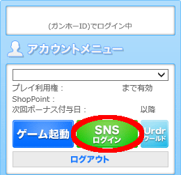
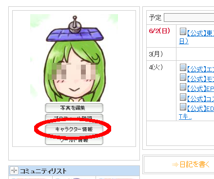
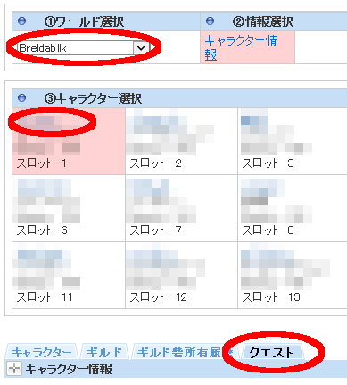
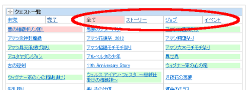
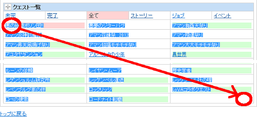
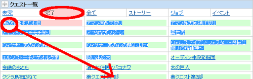
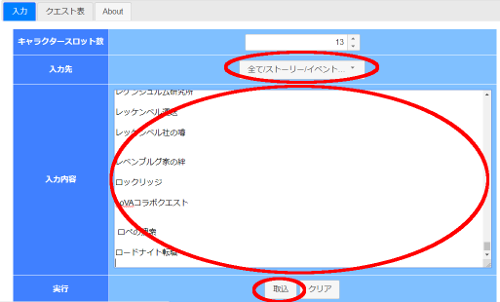
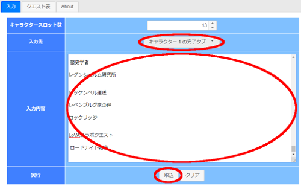
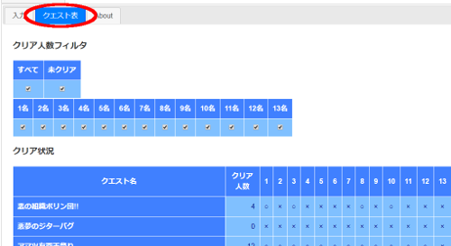

| キャラクタースロット数 | |
|---|---|
| 入力先 | |
| 入力内容 | |
| 実行 |
クリア人数フィルタ
| すべて | 未クリア |
|---|---|
| 1名 | 2名 | 3名 | 4名 | 5名 | 6名 | 7名 | 8名 | 9名 | 10名 | 11名 | 12名 | 13名 | 14名 | 15名 |
|---|---|---|---|---|---|---|---|---|---|---|---|---|---|---|
クリア状況
| クエスト名 | クリア人数 | 01 | 02 | 03 | 04 | 05 | 06 | 07 | 08 | 09 | 10 | 11 | 12 | 13 | 14 | 15 |
|---|
-
トップページからログインし、SNSログインを選択。
 -
キャラクター情報を選択。
 -
ワールドとキャラクターを選択し、クエストタブを選択。
 -
(初回、クエスト一覧が更新された時)
「全て」「ストーリー」「イベント」から判定したいクエスト一覧のものを範囲選択してコピー。


または
(各キャラクターのクリア状況を確認したい時)
「完了」のものを範囲選択してコピー。
 -
(初回、クエスト一覧が更新された時)
本ページの入力タブで「入力先」に「全て/ストーリー/イベント」を選択し、「入力内容」にコピーした内容をペーストし、「取込」ボタンを選択。

または
(各キャラクターのクリア状況を確認したい時)
本ページの入力タブで「入力先」に「キャラクター ○ の完了タブ」を選択し、「入力内容」にコピーした内容をペーストし、「取込」ボタンを選択。
 -
本ページのクエスト表タブで結果を確認。

このツールについて
SNSから取得可能なクエスト一覧をどのキャラがクリアしていてどのキャラがクリアしていないかを確認するためのツールです。
「紫色の竜」など2つ同じ名前のクエストについては1つにまとめられます。